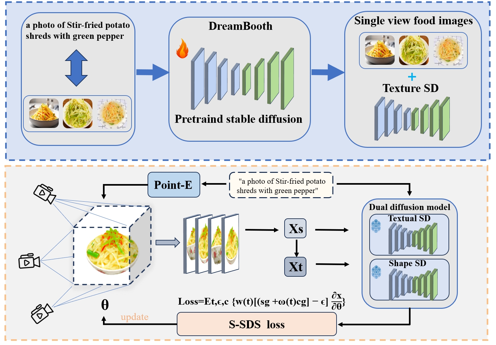
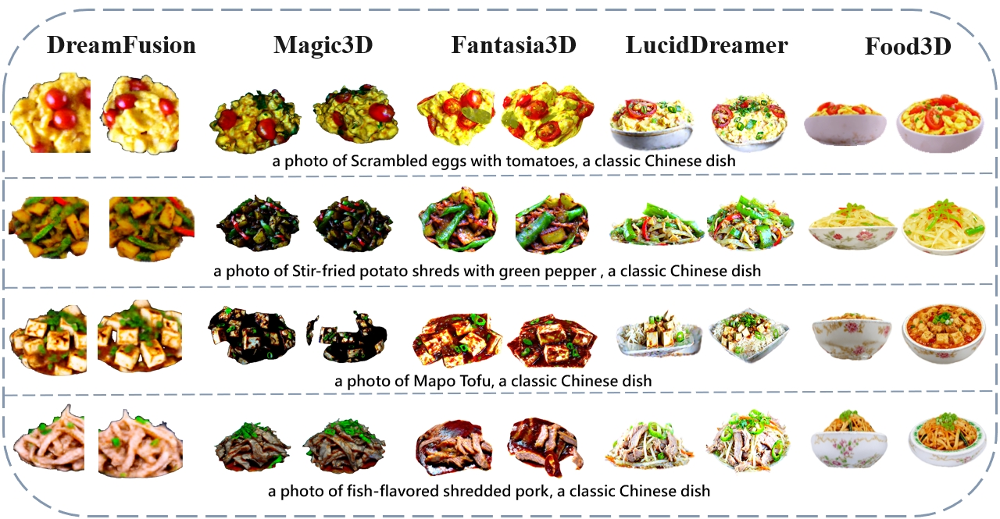
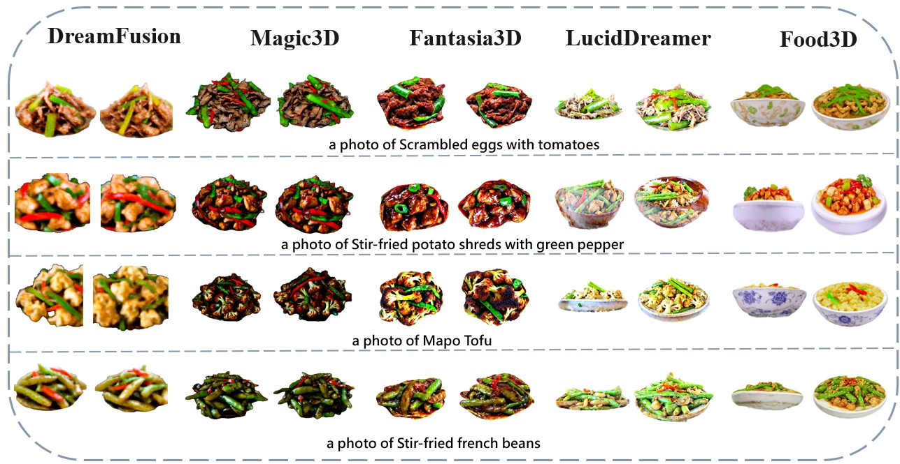

Food3D: Generating 3D Food Images Using a Dual-Branch Diffusion Model
Abstract
This paper proposes a 3D food image generation method based on a dual-branch diffusion model, referred to as Food3D. The primary challenges in generating 3D food images are as follows: 1) there is a significant disparity between food images generated by existing 2D text-to-image models and real food images; 2) existing Stable Diffusion models have insufficient understanding of the 3D information of food. To address these issues, we utilized the DreamBooth model to generate realistic 2D food images; however, this approach only yields single-view perspectives. At the same time, while text-to-3D models can accurately capture the approximate shape of the food, they fall short in terms of texture and appearance. To overcome these limitations, we propose a dual-branch diffusion model that separately generates shape information (Shape-SD) and texture information (Texture-SD). In this process, we employed a 3D Gaussian splatting technique to generate 3D food objects, enhancing the detail and realism of the generated images. Additionally, to further improve the generation effect, we introduce a classifier-free guidance scheduling algorithm to better coordinate the generation of shape and texture. Experimental results demonstrate that this method achieves significant improvements in shape, detail, and overall generation quality.
network

compare


DreamFusion Magic3D Fan3D LucidDreamer Food3D
input prompt: a photo of Scrambled eggs with tomatoes, a classic Chinese dish.
input prompt: a photo of Kung Pao Chicken, a classic Chinese dish.
input prompt:a photo of Fried shredded pork with green pepper, a classic Chinese dish .
input prompt: a photo of Stir-fried potato shreds with green pepper , a classic Chinese dish .